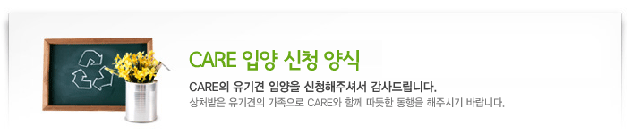

*
필수 입력 사항입니다.
입양/임시보호신청 양식입니다. 성명,전화번호,휴대폰,주소,이메일,파일첨부,질의양식 작성해주세요.
*
성명
전화번호
선택
02
032
031
041
-
-
*
휴대폰
선택
010
011
016
017
018
-
-
SMS 문자 수신을 받으시겠습니까?
예
아니오
*
주소
-
이메일
@
선택
naver.com
hanmail.net
daum.net
yahoo.co.kr
직접작성
파일첨부
*
질의양식
아래의 13문항 모두 작성해 주시고, 저장 누르시면 자동 접수 됩니다. 저장 이후에는 작성하신 글을 다시 확인할 수 없으니 신중하게 저장해주세요. 1. 현재 신청인이 입양하기를 희망하는 천사가 없을 경우 앞으로 입양하고자 하는 동물에 대하여 간단히 설명하여 주시기 바랍니다. 2. 반려동물을 입양하려는 이유: 3. 입양의 결정에 가족 모두 동의하십니까?( ) ① 동의 ② 일부동의 ③ 동의하지 않음 4. 반려동물을 키워 본 경험이 있습니까?( ) ① 네 ② 아니오 5. 과거의 반려동물의 종류는?( ) ① 개 ② 고양이 ③ 기타 ( ) 6. 과거에 키운 반려동물은 어떻게 되었나요?( ) ① 자연사 ② 병사 ③ 사고사 ④ 양도 ⑤ 매매 ⑥ 가출 ⑦ 유실 ⑧ 유기 7. 현재 반려동물을 키우고 계십니까?( ) 8. 7에서 ‘네’인 경우에 반려동물의 종류와 수는? 9. 주거의 형태는? ( ) ① 단독주택 ② 공동주택 ③ 전원주택 ④ 농장주택 10. 9 에서 주거의 형태가 공동주택의 경우 그 종류는? ( ) ① 복도식 아파트 ② 계단식 아파트 ③ 빌라 ④ 원룸 ⑤ 오피스텔 11. 이사, 또는 해외로 이주 시에 반려동물의 거취문제에 대해 어떻게 생각하십니까? 12. 미혼의 경우, 앞으로 결혼, 임신, 출산 시에 입양하신 반려동물의 거취에 대해 어떻게 생각하십니까? 13. CARE에서 반려동물을 입양하시려면, 유기견의 구조와 치료, 보호비로 사용되는 일정 금액의 입양 비를 납부하셔야 하며 중성화수술시행 등 CARE의 입양방침에 동의하셔야 합니다. 동의하십니까? (예/아니오로 적어주세요) 입양은 신청서가 접수 된 후에, CARE의 입양담당자가 입양신청인과 인터뷰 및 미팅을 통해 입양여부를 결정하며, 신청인의 가족 분 중 한 분과 반드시 1회 이상 통화를 해야 합니다. 미성년의 경우에는 부모님의 동의를 필요로 하며 신청인의 부모님과의 인터뷰 및 미팅이 있게 됩니다. 입양 시에는 신분증사본이나 주민등록등본을 지참하셔야 하며 CARE의 입양동의서에 서명하셔야 합니다.